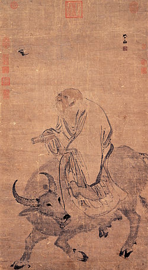
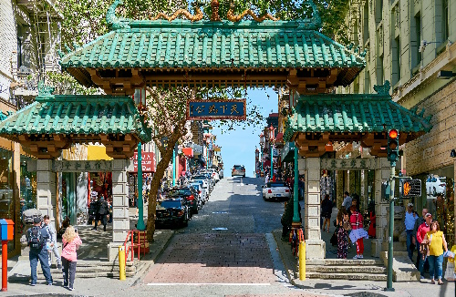

Historia
Cada cocina cuenta la historia de su país, de su pasado, de su pueblo. China no es la excepción. Su gastronomía forma parte integrante de la cultura, el arte y el pensamiento, en estrecha relación con la filosofía y la religión. La historia de la comida china tiene miles de años. Hallazgos arqueológicos atestigüan la existencia de registros de recetas, métodos de cocción, etc... desde la época de la dinastía Zhou (1046 AC hasta 256 AC).
Filosofía y literatura
En el siglo VI antes de Cristo, el filósofo Lao-Tse (老子) se servía de ejemplos procedentes de la gastronomía para ilustrar el concepto del buen gobierno. La literatura china es rica en ejemplos de poesía que tratan del arte de la preparación de los alimentos y de la forma de degustarlos. En libros de cocina china se hallan descripciones acompañadas de consideraciones y referencias al sentido de la estética, a la gracia y la belleza de la naturaleza, que enriquecieron las recetas originales y dieron vida a una literatura rica en leyendas y anecdotas.

Transformaciones por contexto
La morfología de la cocina China mutó a lo largo de la historia por distintas situaciones sociales y culturales concretas. Por ejemplo, muchas familias emigraron a ciudades como San Francisco en busca de una mejor vida (fines del siglo XIX, durante "los Cien años de humillación nacional") y adaptaron recetas tradicionales a los gustos locales. En el año 628 el emperador Tango Taizong (Li Shimin) puso de moda las langostas fritas a modo de snack, para demostrar que las invasiones de estos insectos (que son altamente perjudiciales para el campo,sinónimos de hambre y miseria para la época) eran acontecimiento natural, y que, por lo tanto, el hombre podía alimentarse de ellos sin peligro, obteniendo asi un beneficio de una catastrofe.
